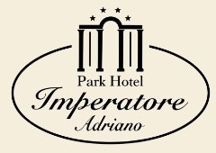
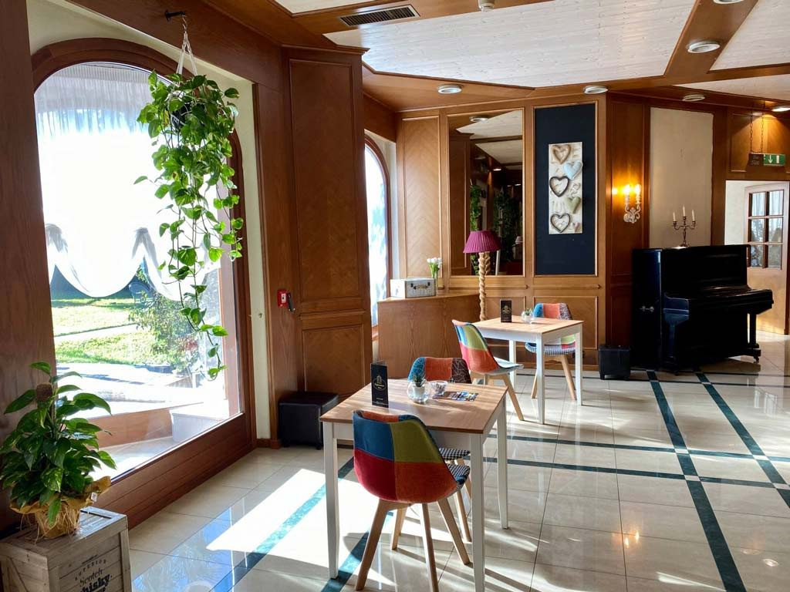
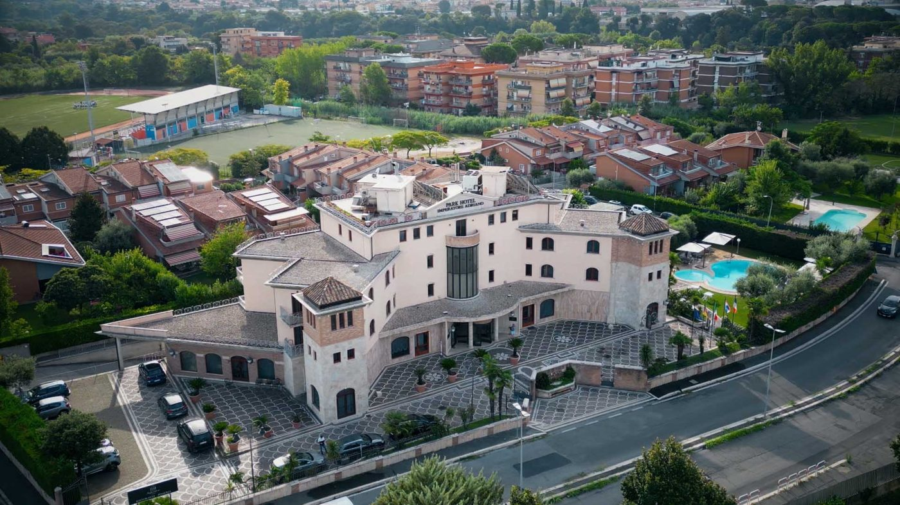
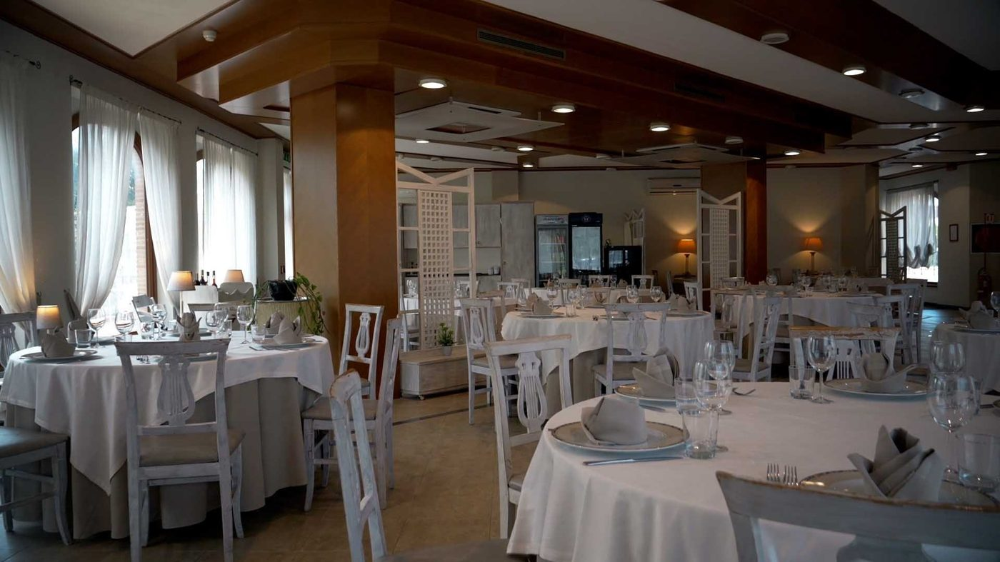

Hotel & travel
The tournament is played in a hotel: if you wish, you can sleep, eat and play in the same place.

Park Hotel Imperatore Adriano****
Via Giuseppe Garibaldi 167, Guidonia (Rome), Italy
+39 342.1970339 / +39 0774.324844
info@imperatorecongressi.it
parkhotelimperatoreadriano.it
A four-star hotel four kilometres from Tivoli and half an hour from Rome, with spacious, bright rooms and a conference centre that becomes the playing hall for three days.
Rooms range from singles to a suite sleeping up to five: a convenient option for families and club groups. The bar is always open, the restaurant serves dinner from 19.30 to 22.00, and guests travelling with a pet are welcome.
Around the hotel there is a garden with centuries-old olive trees and a swimming pool edged in travertine, the stone of Tivoli: in February it is only for looking at, but it is a good reason to come back in summer.
Check-in from 14.30, check-out by 11.00.



Photos: Park Hotel Imperatore Adriano
The playing hall
Everyone plays together, in the hotel's conference hall.


Photos: A.S.D. Scacchi Valle dell'Aniene, Città di Tivoli Tournament
Special rates for players
Half board only (HB)
| Room | Per person |
|---|---|
| Double | 70 € |
| Triple or quadruple | 55 € |
| Single supplement | 30 € |
Prices are per person and include room, breakfast and dinner. Dinner consists of a first course, a main course and a side dish at the chef's discretion.
How to book
Book directly with the hotel, by phone on +39 342.1970339 or +39 0774.324844, or by writing to info@imperatorecongressi.it.
Important: when booking, state that you are a player in the tournament, or a family member of a player. Otherwise the special rates will not be applied.
Book as early as possible: during the tournament rooms are in high demand and sell out quickly.
Eating at the hotel
The food at the Park Hotel is good, and we speak from experience: it is where we eat at our tournaments. The kitchen works with fresh ingredients and ranges from local specialities to more refined dishes; the pizzeria has a wood-fired oven and its pizza is a favourite with players; the bar, always open, is the place to meet for an aperitivo or to talk over the game just finished.



Photos: Park Hotel Imperatore Adriano
The restaurant on the hotel's website · The hotel on Instagram · The hotel on Facebook
Prices for players
| Buffet lunch, water included | 13,50 € |
| Dinner with pizza, fried food and water | 15 € |
| Dinner with starter, first course and side dish | 20 € |
If you choose half board, dinner is already included in the special rate.
Getting there
By car from Rome
A24 Rome–L'Aquila motorway, Tivoli exit. The hotel is five minutes from the toll gate; from the centre of Rome it takes about 25 minutes.
By car from the rest of Italy
From the A1 motorway, from either north or south, take the link to the A24 towards L'Aquila and leave at Tivoli, the first exit.
By train
The FL2 regional line connects Roma Tiburtina with Tivoli. The nearest stations are Bagni di Tivoli (being renamed Tivoli Terme) and Tivoli, both about three and a half kilometres from the hotel as the crow flies: the last stretch is by taxi or car, not on foot. Timetables and tickets at trenitalia.com.
By bus from Rome
Cotral buses to Tivoli leave from the Ponte Mammolo terminus, on metro line B, and run along Via Tiburtina. The nearest stop is "Via Tiburtina (Pontelucano)", less than a kilometre from the hotel. The journey takes around three quarters of an hour, traffic permitting. Timetables at cotralspa.it.
Taxis and transfers
From the stations and the bus stop the hotel is a few minutes away by car. For a taxi or an airport transfer, it is best to ask the hotel reception, on +39 0774.324844.
By air
From Fiumicino the FL1 regional train goes to Roma Tiburtina, where you change for the FL2. From Ciampino you first reach Roma Termini and then Tiburtina. If you hire a car, take the Grande Raccordo Anulare (the Rome ring road) and then the A24.
Train and bus timetables change during the year: check them on the official websites a few days before you travel.
Parking
Parking is never a problem and is always free. The hotel has its own car park, for cars and motorbikes, with direct access to the lobby. Just outside there is a very large open car park, free of charge, with room for everyone even during the tournament.